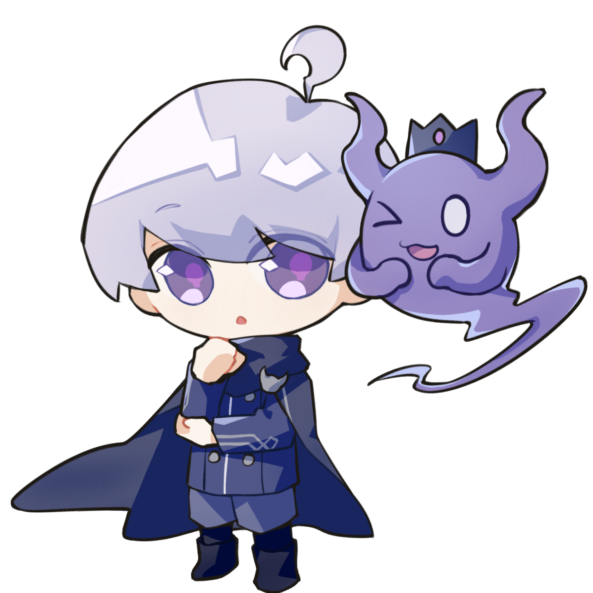
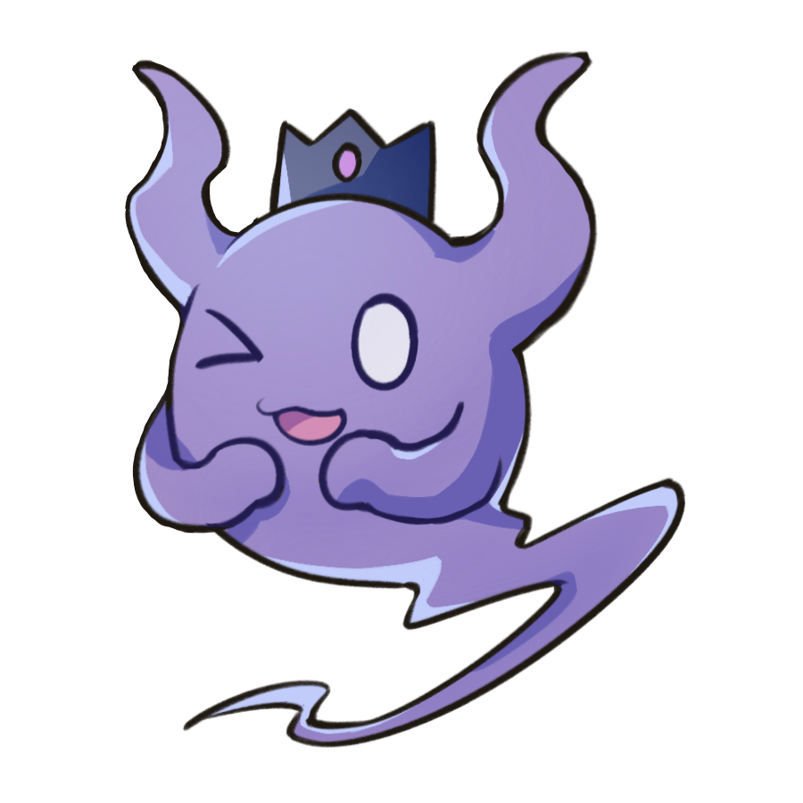

说明
☆幽玛会在浏览器底部随机走来走去
☆每隔10s进行一次随机对话
☆（作死一下）选项小死神会追杀鼠标！
移动端请点击屏幕躲避
☆集齐七个诚的面具或许会有什么事情发生哦？
说明10s后自动关闭，可以在“菜单-自我介绍”中再次查看。
建议等对话消失再进行操作，不然新对话可能会被强制消失。
为了让幽玛有更大的活动空间，推荐使用横屏浏览。
学艺不精！可能会有bug！总之只是无聊小玩具！
立绘：桃小黑
制作：六点儿水
sixwater个站
您好？
呃……我确实是侦探……
☞（作死一下）
☞想委托你……
☞可以给我做点饭吗？
☞嗯……？那是什么？
☞请做个自我介绍！
☞关闭菜单
啊，好的！
请问需要我做些什么？
☞请给我《乌鸦与鸽子的弱肉
强食世界救世物语》
☞请给我肉包
☞请给我卡纳依区最大的秘密
☞请帮我挑选礼物
☞请帮我破案！
☞其他
☞关闭菜单
 